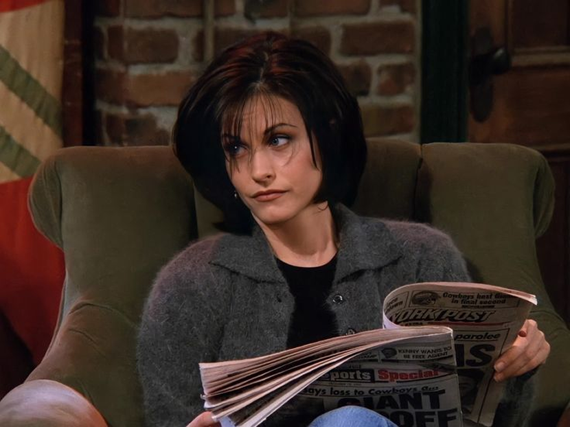
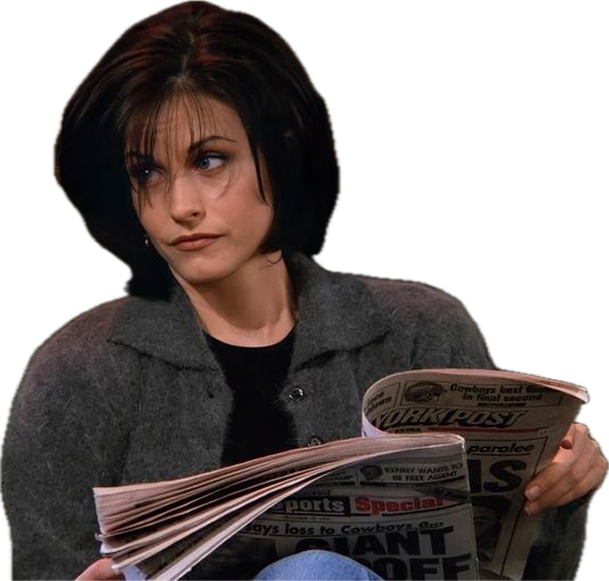
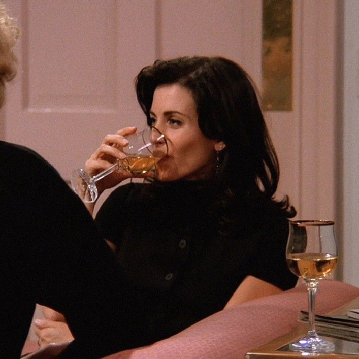
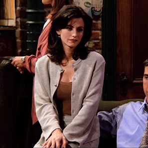
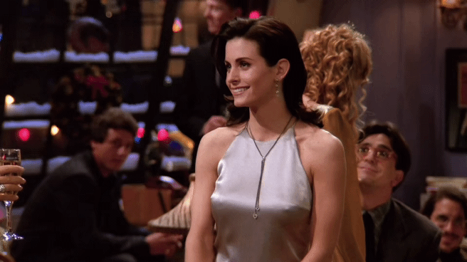

www.monica.com


Monica
The queen of cleanliness who turned childhood chaos into a lifelong mission for perfection. Her kitchen is her kingdom, her labels are legendary, and her friends are the family she chose. She’s competitive to the point of hilarity, endlessly organized, and secretly softer than she pretends to be. Behind every perfectly folded towel and every spotless countertop is someone who loves fiercely, cares deeply, and keeps the group together even when life gets messy. A bit intense? Sure. But she’s undeniably the heart and soul of the entire crew.
Chef

Monica doesn’t just like things clean she need them perfect. Every detail has its place, and every plan has its order. Her perfectionism can drive her friends crazy, but it’s also what holds their world together

Perfectionist
Monica doesn’t just like things clean she need them perfect. Every detail has its
place, and every plan has its order.
Her perfectionism can drive her friends crazy,
but it’s also what holds their world together
Monica and Chadler

Monica and Chandler’s love wasn’t grand or dramatic — it was real, steady, and deeply human. What made their relationship so special was that it didn’t appear in a whirlwind of passion, but quietly grew in the spaces where friendship and trust had already lived for years. As longtime friends, they knew each other’s flaws better than anyone else: Monica’s need for control, her competitive streak, and her fear of imperfection; Chandler’s sarcasm that masked insecurity, his fear of commitment, and his constant self-doubt. But instead of breaking them apart, these flaws fit together like puzzle pieces. Monica’s perfectionism softened under Chandler’s warm, disarming humor, and Chandler’s insecurities finally rested in the safety of Monica’s unwavering belief in him. They didn’t fall in love because they were perfect — they fell in love because they were honest, vulnerable, and willing to grow together. Their relationship wasn’t built on sparks, chaos, or dramatic twists. It was built on choosing each other every single day, in big moments, small moments, and all the wonderfully ordinary moments in between. And in that quiet consistency, they created a partnership that was stronger, funnier, and more beautifully human than either of them ever expected.
Monica’s bag is basically a portable cleaning station — a tiny, self-contained universe of order that travels everywhere she does. True to her perfectionist spirit, she carries hand sanitizer, mini wipes, an emergency sewing kit, and even a lint roller, because honestly, you never know what kind of chaos the world might throw at you. There’s also a snack for a hungry friend, a few band-aids, a stain-removal pen, and yes, even an extra set of utensils neatly wrapped like they came from a five-star restaurant. Every single item is carefully labeled, perfectly folded, alphabetized, categorized by use-case, and arranged in a way that can only be described as Monica-level organized. It’s not just a bag — it’s a survival kit for anyone who wants to keep life just a little more under control.
-
Hand Sanitizer
Germs are absolutely not welcome.
-
Sewing Kit
No button gets left behind.
-
Emergency Snack
Someone might get hungry, and Monica’s always prepared.
-
Cutlery
You never know when—or where—you might end up needing food!
Monica’s Rules
“Monica’s Rules” is a lovingly over–detailed collection of all the tiny laws, habits, and systems Monica believes keep the world (or at least her apartment) running smoothly. From color-coded cleaning routines to her strict guest etiquette, every rule reveals a little bit of her anxious perfectionism and a lot of her heart. These aren’t just instructions — they’re her way of creating order, comfort, and a home where everyone she loves always has a place… as long as they follow the chart.
-
Rule 1Coasters exist for a reason. Use them. Always.
-
Rule 2If you cook in my kitchen, you follow my system. No exceptions.
-
Rule 3Label everything. If it’s not labeled, it’s chaos.
-
Rule 4“Clean” and “organized” are not the same thing learn the difference.
-
Rule 5Cleaning is a love language.
-
Rule 6Leftovers are sacred. Don’t even think about touching my Thanksgiving meal.
-
Rule 7Hospitality means making guests feel at home but not too at home.
-
Rule 8Competition keeps friendships healthy. Especially when I win.
-
Rule 9If you’re early, you’re on time. If you’re on time, you’re late.
-
Rule 10Love hard, clean harder.
I know!
 And What Happens If You Break the Rules...
If you dare to ignore a coaster, prepare for the stare. You know that terrifying, wide-eyed Monica glare that freezes time and melts confidence. Touch her organized kitchen drawers? You’ll be met with a label maker and a lecture. Mess up her cleaning schedule? She’ll “politely” redo it… while mumbling about how some people clearly don’t respect hygiene. And if you dare to eat her leftovers especially Thanksgiving leftovers may the gods of cleanliness have mercy on your soul. Because with Monica Geller, the rules aren’t just rules. They’re a lifestyle break them, and you’ll find out just how loud perfection can be.
Monica, Phoebe and Rachel
-


-
Three women, completely different—and that’s exactly why they work. Monica is the caring organizer who keeps everyone grounded, Rachel brings style, warmth, and a little chaos in the best way, and Phoebe adds her wild, magical unpredictability that makes everything brighter. Together, they’ve survived love, heartbreak, bad jobs, worse dates, and countless late-night talks. They fight, they cry, they hug, they forgive— proving that real friendship isn’t about being the same, but about growing up side by side and choosing each other again and again.

The
Gellers
Monica and Ross Geller are siblings who turned childhood competition into a lifelong bond. She’s the unstoppable perfectionist, he’s the lovable paleontology nerd, and somehow their differences only make their connection stronger. From dance routines no one asked for, to Thanksgiving disasters, to countless arguments over who was the real favorite child, the Gellers prove that family isn’t always peaceful — but it’s always unbreakable.
They tease, they fight, they embarrass each other publicly, yet they show up every single time it matters. In the end, Monica and Ross are more than siblings — they’re each other’s first best friend, lifelong rival, and the one person who knows every embarrassing story but loves you anyway.
-  
-

In the end, Monica Geller is the heart of the group — the one who cooks, cleans, worries, and loves a little too much, in the best way. This page ends here, but her warmth and steady care live on in every moment they share. With Monica, the friends always have a place to come home to.